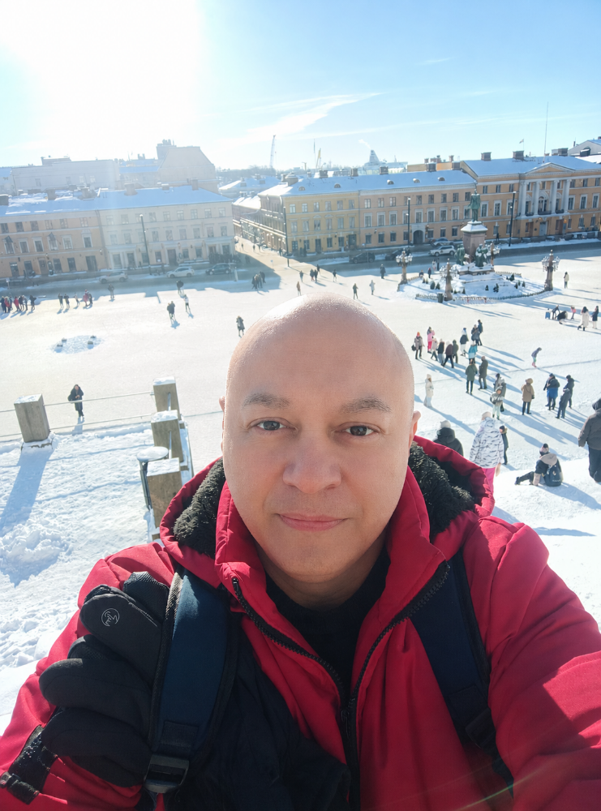
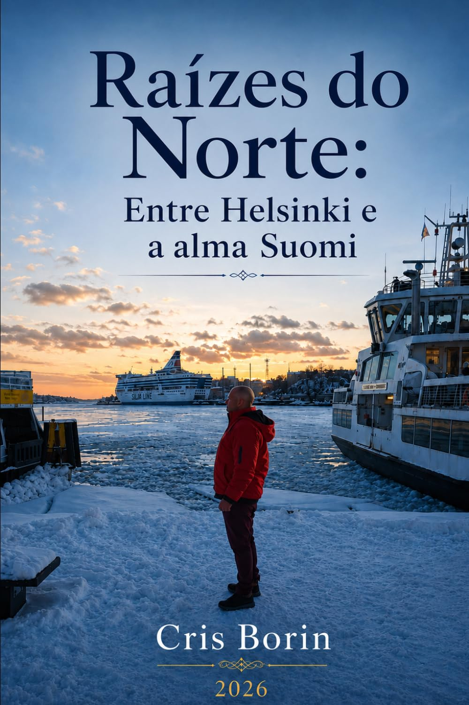
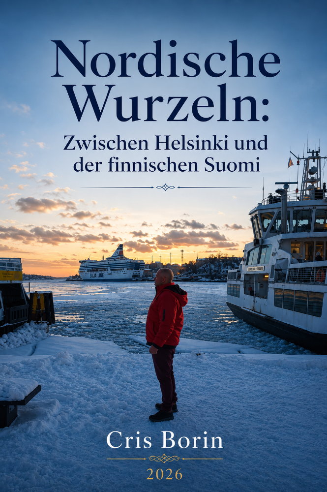
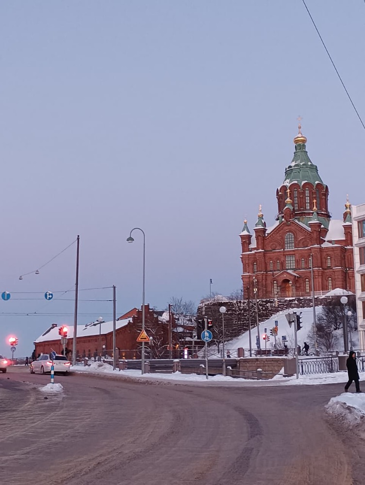

Algumas viagens mudam o lugar onde estamos. Outras mudam quem somos.
Cris Borin é escritor brasileiro e autor de Raízes do Norte, uma obra nascida do encontro entre viagem, memória, Finlândia e reflexão.
Manche Reisen verändern den Ort, an dem wir sind. Andere verändern uns.
Cris Borin ist ein brasilianischer Schriftsteller und Autor von Nordische Wurzeln, einem Werk, das aus der Begegnung von Reise, Erinnerung, Finnland und Reflexion entstanden ist.
Um escritor brasileiro entre dois mundos.
Ein brasilianischer Schriftsteller zwischen zwei Welten.

Cris Borin é o autor de Raízes do Norte: entre Helsinki e a alma Suomi, publicado de forma independente em 2026.
Este espaço acompanha o livro, suas paisagens e os caminhos que aproximam viagem, memória e literatura.
Cris Borin ist der Autor von Nordische Wurzeln: Zwischen Helsinki und der Seele Finnlands, das 2026 unabhängig veröffentlicht wurde.
Dieser Raum begleitet das Buch, seine Landschaften und die Wege, die Reise, Erinnerung und Literatur miteinander verbinden.
Raízes do Norte
Uma viagem à Finlândia que também é uma viagem para dentro.
Nordische Wurzeln
Eine Reise nach Finnland, die zugleich eine Reise nach innen ist.


Imagem da edição brasileira · ver na Amazon
Bild der deutschen Ausgabe · auf Amazon ansehen
Uma obra sobre deslocamento, paisagem e o encontro entre Helsinki e a alma Suomi.
- Viagem
- Memória
- Finlândia
- Identidade
- Reflexão
Ein Werk über Bewegung, Landschaft und die Begegnung zwischen Helsinki und der Seele Finnlands.
- Reise
- Erinnerung
- Finnland
- Identität
- Reflexion
Para quem sente falta de um lugar em que nunca esteve.
Für alle, die eine Erinnerung an einen Ort spüren, den sie noch nie gesehen haben.
Interesse pela Finlândia
Para quem é atraído pela paisagem, pelo silêncio e pela cultura nórdica — e quer atravessá-los pela literatura.
Viagens que deixam marcas
Para quem já voltou de uma viagem diferente de como partiu, e reconhece esse deslocamento em si mesmo.
Literatura de reflexão
Para quem busca prosa contemplativa, mais interessada em perguntas do que em respostas fáceis.
Encontro entre culturas
Para quem se interessa pelo que acontece quando um olhar brasileiro encontra um mundo nórdico.
Interesse an Finnland
Für alle, die von Landschaft, Stille und nordischer Kultur fasziniert sind und sie durch Literatur erleben möchten.
Reisen, die Spuren hinterlassen
Für alle, die nach einer Reise anders zurückgekommen sind und diese Verwandlung in sich selbst erkennen.
Reflektierende Literatur
Für alle, die eine nachdenkliche Prosa suchen, die mehr an Fragen als an einfachen Antworten interessiert ist.
Begegnung zwischen Kulturen
Für alle, die sich dafür interessieren, was geschieht, wenn ein brasilianischer Blick auf eine nordische Welt trifft.
O Norte como território — e como estado de espírito.
Der Norden als Raum — und als Seelenzustand.
Helsinki organiza o tempo de outro modo: mais devagar, mais silencioso, mais atento ao que não precisa ser dito. É nesse território — geográfico e também interior — que Raízes do Norte se movimenta.
A Finlândia aparece no livro não como cenário turístico, mas como uma forma de pensar: o design que resolve sem exagerar, a natureza que não pede licença, o contraste entre o cotidiano brasileiro e a rotina nórdica.
Helsinki ordnet die Zeit auf andere Weise: langsamer, stiller, aufmerksamer auf das, was nicht gesagt werden muss. Genau in diesem Raum — geografisch und innerlich zugleich — bewegt sich Nordische Wurzeln.
Finnland erscheint im Buch nicht als bloße Kulisse, sondern als Denkweise: das Design, das ohne Übertreibung funktioniert, die Natur, die keine Erlaubnis verlangt, und der Kontrast zwischen dem brasilianischen Alltag und der nordischen Routine.

Imprensa
Presse
Em breve, este espaço reunirá entrevistas, matérias e participações de Cris Borin na imprensa.
Contato para imprensaBald wird dieser Raum Interviews, Artikel und öffentliche Auftritte von Cris Borin in der Presse versammeln.
Kontakt für PresseanfragenEntrevistas, podcasts e eventos.
Interviews, Podcasts und Veranstaltungen.
Novas entrevistas, participações e materiais de imprensa serão reunidos aqui conforme forem publicados.
Neue Interviews, Auftritte und Pressematerialien werden hier gesammelt, sobald sie veröffentlicht werden.
Acompanhe Cris Borin
Literatura, viagens, Finlândia e os bastidores de uma vida entre mundos.
Cris Borin folgen
Literatur, Reisen, Finnland und Einblicke in ein Leben zwischen zwei Welten.
Acompanhe o próximo capítulo
Novos textos, lançamentos e viagens serão compartilhados no Instagram.
Dem nächsten Kapitel folgen
Neue Texte, Veröffentlichungen und Reisen werden auf Instagram geteilt.